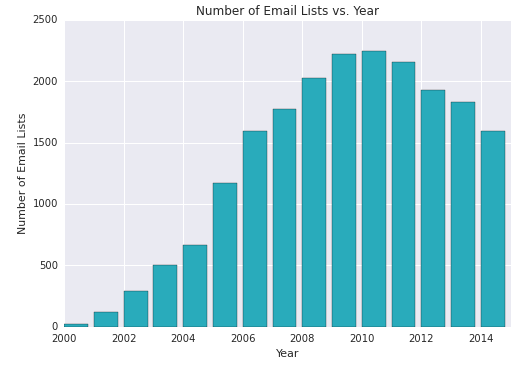
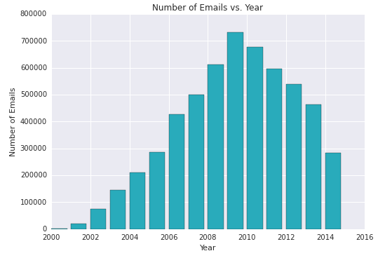
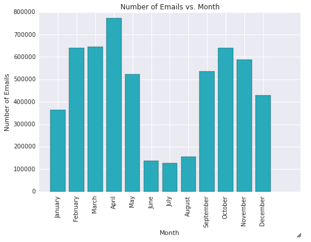
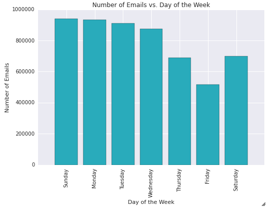
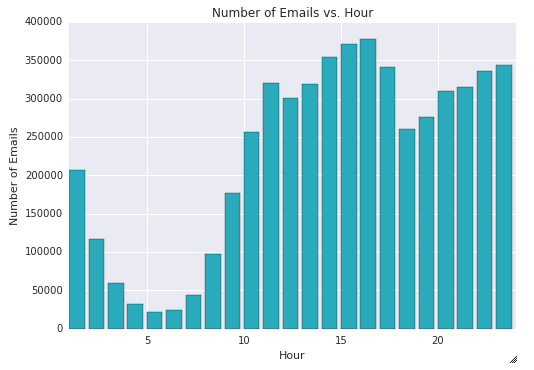
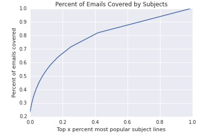
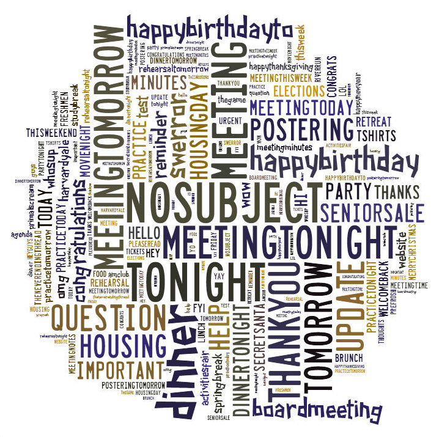

Harvard students send over 800,000 emails almost every year, reflecting information about their activities, classes, moods, interests, etc. There are over 7,000 lists and over 5 million emails hosted on the Harvard Computer Society's servers - thus serving as an incredible amount of data concerning student life. We are interested in exploring the ways Harvard students communicate with each other through email, and we decided to use the public HCS archives in order to analyze trends in campus-wide communication. This is an incredible amount of data about Harvard students, with patterns in social interaction and student habits hidden within the millions of emails. Our motivations are to better understand the interactions within an email list so that students can tailor their emails to predict responses and communicate more effectively.
Thus, our goals in this project are to 1) understand the network created through an email list and see if we can determine the hierarchy of the organization using that list, i.e. can we figure out who is an important member of the club based on how many responses they get to their emails and 2) predict whether a student will get a response given an email and a list.
The easy part about the data is that it all lives in one place and is well-formatted through the archival format of an open-source mailing list program called mailman. The difficult part was how we were going to process and act on the data.
The format of a mailbox is "list-name.mbox". You can find more information about the mbox format here and information on the Python module that processes it here
All emails spanning back to 2001 (including indexing, publicly available html pages, and attachments) made up about 4 terabytes of data that lived on an HCS production server that is constantly running and serving the school. Because of the load of the server, we obviously could not process the data on the HCS servers (especially because the archives are also constantly updating).
The solution: Willy happened to have access to $2,000 / month of credits for an unnamed hosting platform. He was able to spin up a server along with an instance of NFS (network-file-server for block storage) and take a data-cut of all of the archival data. After filtering out the attachments and indexing, we were left with 250 GB of raw text that needed to be transferred over a network to our new servers! Yay! :)
So we can do the following:
This took roughly 3 days to run.
To see how long it would take to interate over each of the .mbox file, we ran a simple script to count the number of emails total. This took about 10 hours and we got about 5 million emails total.
This obviously wasn't going to work in the long-run: if an O(n) algorithm took 10 hours to run, we'd never be able to do anything more complicated.
So we used 4 more servers on LAN connected to our NFS server and wrote a handler on top of it called mrjob.py. So we had 5 nodes with 1 master and 4 workers and now our counting script would only take 2-3 hours. Much more manageable.
With the data set up, we could do tons of interesting exploratory analyses on our our data fairly quickly. This is what we found:
    We also looked at subject lines and found the top 10% of popular subject-lines account for 50% of the emails sent over the Harvard mailing lists.
Here's a wordcloud of the subject lines!
We looked at the SCAS (Small Claims Advisory Service) club and the Premed-Exec lists for the years 2013 and 2014. Using d3, a Javascript library, we were able to visualize the networks created. Each person on the list is represented by a node, and the edges represent responses. An email where person A responds to person B corresponds to an edge from A to B. Each edge is also weighted based on the time between responses.
Subsequent emails between the same two people just add to the edge weight. We then sized the nodes by the total weight of all edges entering and leaving that node. In other words, the largest nodes are those for people who both respond a lot and also get responded to.
We created a graph data structure out of the email lists, where the graph was represented by an adjacency list. The top level was a dictionary with email addresses as keys. Each email address mapped to another dictionary again keyed by email address where the value was the weight for that edge.
Below we have the visualization of the output: The purple node is the node with the maximum total weight of all the nodes in the graph. For the premed-exec list, the largest node in 2013 is the president of the Premedical Society at the time, Vivian Leung, and the largest node in 2014 is Lily Zhang, the treasurer (the current president is also one of the largest nodes). For the scas-board list, Jessica Chao was the executive officer last year and Anita Lo is the executive officer this year. They are both the largest nodes for their respective years. You can also see how Willy took on a larger role in the group this year; his circle got correspondingly larger.
We also implemented a prediction portion of this project that, given the text of an email, predicts whether or not that email will elicit a response from the email list in question. In order to implement this, we go through every email in a mailing list's mbox file and extract the text of each email with a binary indicator variable corresponding to whether or not anyone responded to the email in question. From this, we proceed to extract features from the text either as a bag-of-words or n-gram format (with n=2 to reduce excessive computation in this code).
Once we have these features extracted, we split the data from the list into a training set and a test set in a 60-40 fashion. We also create label vectors corresponding to the true label of each of the emails in these two sets of data. With these features and label vectors, we then train two different classifiers: a random forest and a linear SVM model. With each of these, we run grid_search with ten-fold cross-validation over a reasonable set of parameters in order to optimize the classifier for the current mailing list data.